Research Directions
Physics Education and STEM Research Experience
Dr. Rai is dedicated to advancing physics education through innovative, hands-on learning experiences.
His work connects the foundational principles of physics with modern experimental methods to make learning both engaging and meaningful.
He emphasizes active learning by incorporating dynamic classroom discussions, practical laboratory activities, and community outreach.
Dr. Rai integrates advanced topics such as quantum transitions, photonic crystal metamaterials, nanoscale materials,
and quantum confinement into his teaching, using student-centered strategies to make complex concepts accessible.
He also incorporates modern technologies, such as sensor-based projects, to enhance the learning environment
and provide students with real-world applications of physics. Through these approaches,
Dr. Rai aims to inspire and prepare the next generation of scientists and engineers.
Building on these educational efforts, Dr. Rai has also established a comprehensive STEM Research Experience Program to further
immerse students and the broader community in meaningful scientific inquiry. In addition to his classroom innovations,
he actively participates in several STEM initiatives, including Physics Education Research (PER) groups,
Indigenous Knowledge in Engineering ('IKE), Undergraduate Research Experiences (URE), the Project Kaihuwa'a S-STEM Scholarship,
and the Bridge to the Baccalaureate (B2B) program. His current research spans areas such as geophysics, renewable energy, space debris,
and materials science, all while maintaining a strong focus on fostering student involvement and strengthening scientific skills.
Dr. Rai values the foundational role of classic experimental equipment and methodologies in physics education,
and thoughtfully integrates them with modern classroom technologies to create a transparent and engaging learning environment.
Through this blend of tradition and innovation, he continues to inspire the next generation of scientists and engineers,
emphasizing the importance of both timeless principles and evolving scientific practices.
Abstract of My Ph.D. Research Project
Nonlinear modes of electromagnetic fields propagating in photonic crystal systems have
been studied by implementing various computer simulation techniques using
electromagnetic theory. The fundamentals of simulation of photonic crystals are analyzed using
general purpose methodologies such as the FDTD or PWE methods. Information derived
from the underlying physical insights into the systems could be utilized to describe the
control mechanisms over the propagation of the modes around impurities in the photonic
crystal lattice. The impurities trap the resonantly localized electromagnetic modes having
a frequency in a stop band of the photonic crystal, suggesting novel optical controls in
the photonic crystal systems. Our focus is on better understanding the nonlinear modes
existing within photonic crystal waveguides which interact with the Kerr nonlinearity of
the controlling medium; this enables us to reveal specific mechanisms of the nonlinear
systems and their potential nonlinear functions and applications. To gain full generality
of the nonlinear modes of increasing complexity, we propose a novel theoretical approach,
the difference equation waveguide, using Green's function theory of the non-homogeneous
system. The recursive difference equations for the photonic crystal waveguides are solved
for the guided modes interacting with multiple bound modes localized on the impurity
features. The interest is on the transmissivity of resonant scattering of the nonlinear
modes arising from in- or off-channel features formed in Kerr dielectrics in a 2D photonic
crystal. Here, the modes display the wide and interesting varieties of behavior present in
the system including optical bistability and induced transparency. More interestingly, the
transmissions are fully treated for the case in which the field dependence of Kerr dielectric
properties, with enhancing nonlinear effects, allows two different frequency waveguide
modes to interact with one another by a modulation of the Kerr properties. In this
regard, we show the observation of one mode used to model numerically the transmission
characteristics of the other, e.g., the propagation of one frequency mode can turn on and
off the resonant transmission of the other along the waveguide channel.
Research Statement
My research interests are in the field of condensed matter theory and electromagnetics. While pursuing my M.S. degree at Central Michigan University
during 2002-2005, I studied quantum confinement effects in nanostructured and half-metallic systems. During my Ph.D. years (2006-2012)
at Western Michigan University I worked on several different projects related to computational/theoretical
electromagnetics using concepts of condensed matter physics.
As a new Ph.D. scholar in physics, I seek opportunities to advance my career focusing on teaching and research in university or college, industry, and labs.
My work during the last six years at Western
Michigan University has focused on computer simulation and modeling of a new type of optical material
called photonic crystal [1] and its application for wave guiding, similar to fiber optics, in modern computer
network and communication circuit technology, including lasers. Photonic crystals (also known as
metamaterials) are periodic dielectric structures with lattice parameters of the order of the wavelength
of the electromagnetic wave. Typical for a photonic crystal is that its structure, if designed correctly,
affects the properties of light modes flowing through it and allows us to achieve a complete control
(moulding, manipulating, and guiding) over the propagation of light energy. This gives an opportunity
for a number of possible applications in optical integrated circuits, including nanoscience based on the
implementation of this control. Recently these endeavours were the focus of a number of theoretical
and experimental efforts on the systems of linear dielectric media [2-6]. Yet we know little about the specific
mechanisms of the systems formed of nonlinear optical media and the potential for nonlinear functions
that might be revealed with further study. My current/future research is focused on better
understanding nonlinear modes existing with photonic crystal waveguides and resonators. The overall
goal of my research is to investigate propagation properties of light modes in photonic crystals; and
to design, analyse, and implement various numerical simulation techniques to derive all information
about the underlying physical insights into the light modes of 1D and 2D photonic crystal devices.
The schematics of some of those devices/structures of interest are shown below:
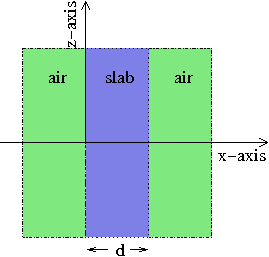 |
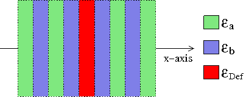 |
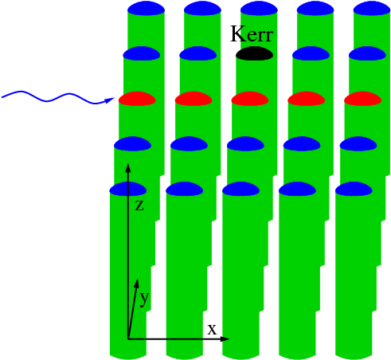 |
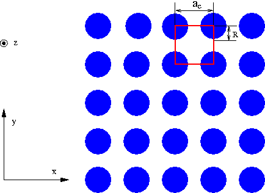 |
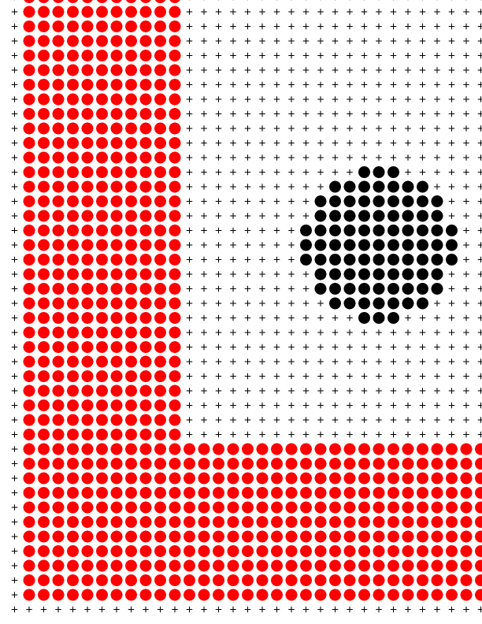 |
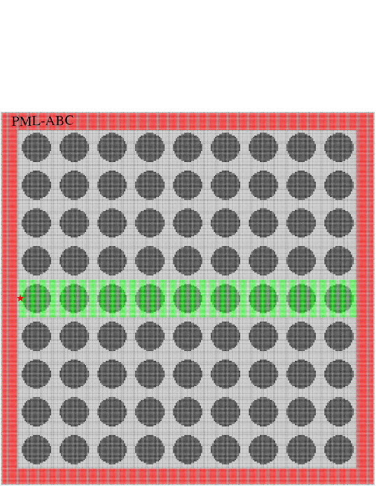 |
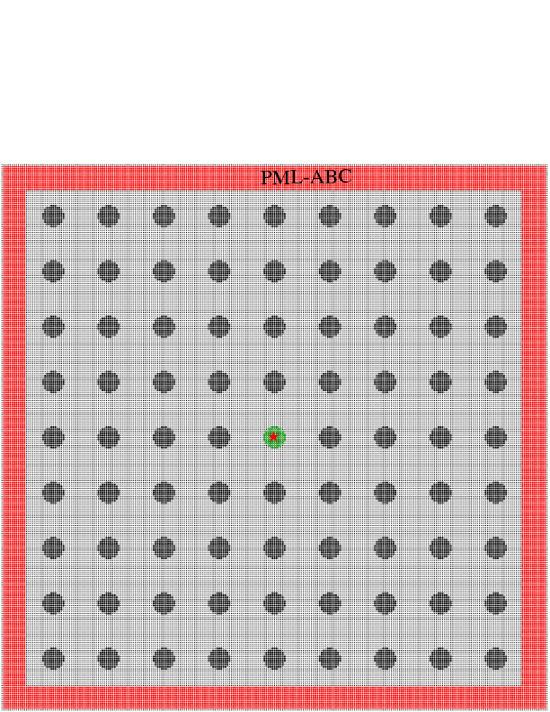 |
The periodicity for moving light in photonic crystal leads to the division of the light modes into
pass and stop band frequency states [1,7,8]. The modes at pass band frequencies can propagate through the
photonic crystal, while modes at stop band frequencies do not propagate through the photonic crystal.
The stop band property of a pure photonic crystal can be directly implemented for device applications
as frequency filters or dielectric mirrors, because when light with frequency within the stop band is
incident on the structure, it appears to be completely reflected or scattered. However, intentionally
introduced site defects (single impurities) into the photonic crystal lattice can lead to localized
electromagnetic modes or, in cases of multiple defects, to localized propagating modes. The localized modes
are formed in the stop band, since these states cannot propagate through the surrounding photonic crystal
materials. This suggests that many useful devices can be designed using impurities (defects) in the
photonic crystals. Examples are microcavities and linear waveguides. Recently, these designs have
received a lot of attention because of their possible use as components in optical integrated circuits
that would be analogous to electronic integrated circuits but that would operate entirely with light [9,10]. The
localized or propagating modes on such designs are the primary interests in my research. Thus, much
of my future research will be focused on investigating the characteristics of the localized modes arising
from impurities and their applications in optical switching and multiplexing.
The impurity media are generally formed of linear or nonlinear dielectric materials depending on
the types of impurity light modes to be treated in the problem, and they actually enable us to localize
the light modes about a particular region in the lattice of the crystal. In my investigations, I proposed
Kerr-type nonlinear modes due to their potential applications in optical switching. Since very little
work had previously been done in this area, my dissertation research investigated, in detail, nonlinear
modes with various in- and off-channel features expected to display a wide range of modal behaviors
on two-dimensional photonic crystal waveguides. I found that, for instance, in a case of a single guided
mode propagating around the off-channel Kerr site, the system exhibits transmission resonances and
various features of optical bistability. Recently my paper on this work has been accepted for oral
presentation to the American Physical Society March Meeting 2012.
Photonic crystals are complex scattering problems in which numerical simulations are crucial for
most theoretical analyses. I developed algorithms and computer codes for 1D and 2D systems of
photonic crystal devices using general purpose simulation methods such as Finite-Difference Time-Domain (FDTD)
and Plane Wave Expansion (PWE) methods [11-15]. The results of such numerical approaches can be used to explain
accurately the theoretical and experimental basis of various fundamental properties of photonic crystal
structures. I proposed high-Q microcavities using the Fourier spectral analysis of the FDTD response
of the cavity structure. In order to gain full generality about impurity light modes of photonic devices,
I also developed algorithms using a semi-analytical approach called Difference Equation (DE) method [4,16,17] for
Kerr-type nonlinear modes.
The plots below present some of my FDTD, PWE, and DE results.
I believe my knowledge on such computational/theoretical works will serve me well to become
physics faculty or researcher at a research university or college.
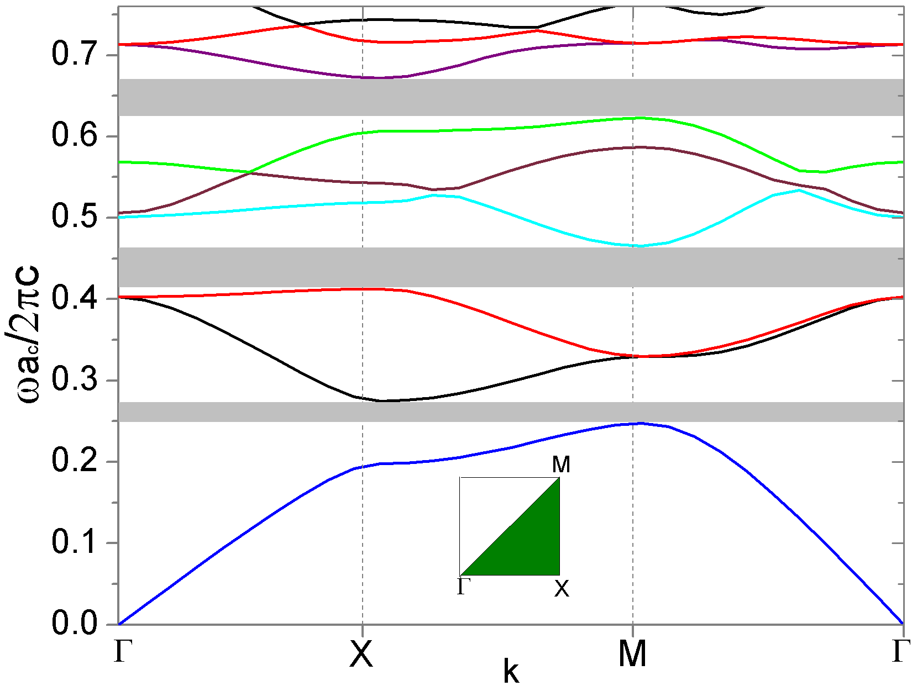 |
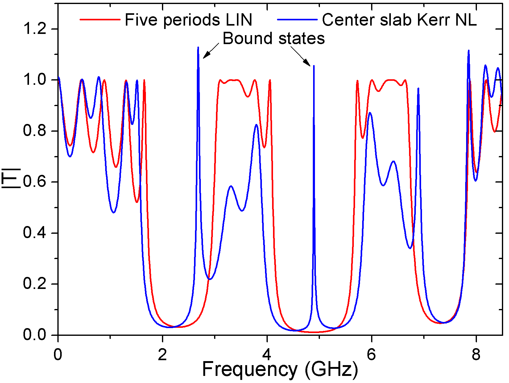 |
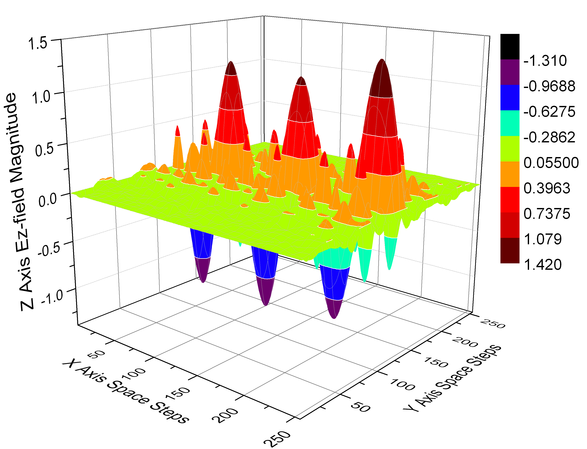 |
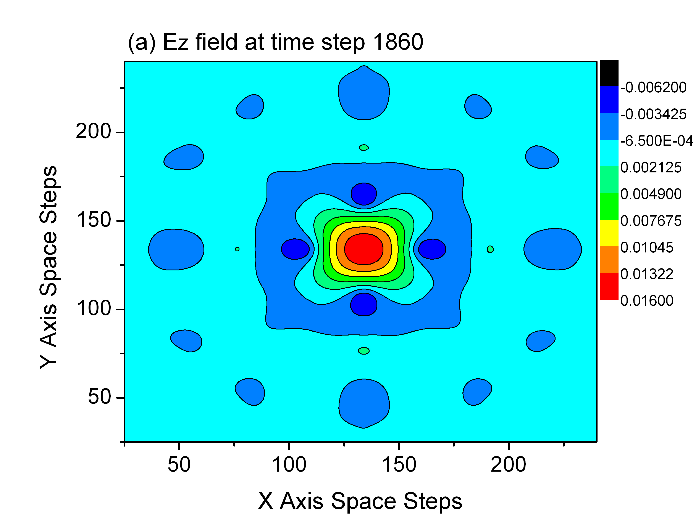 |
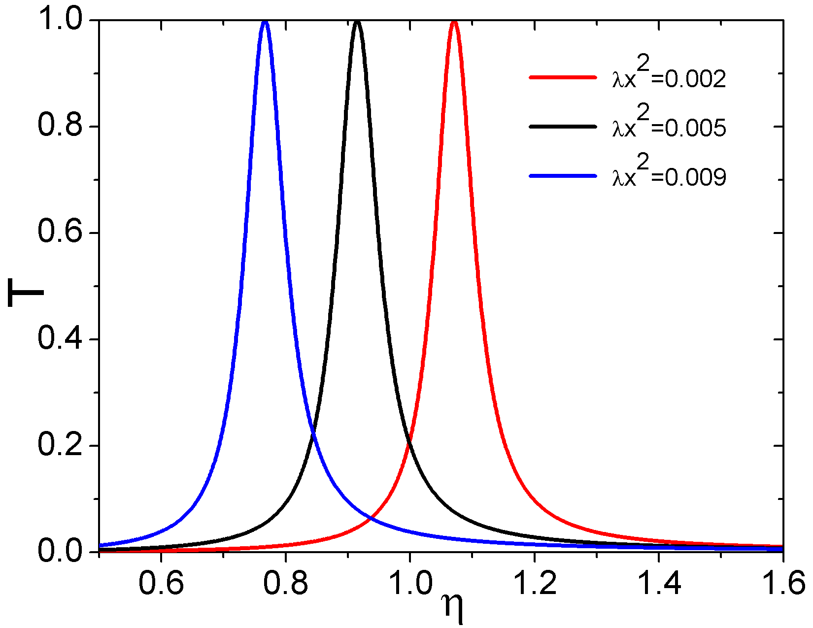 |
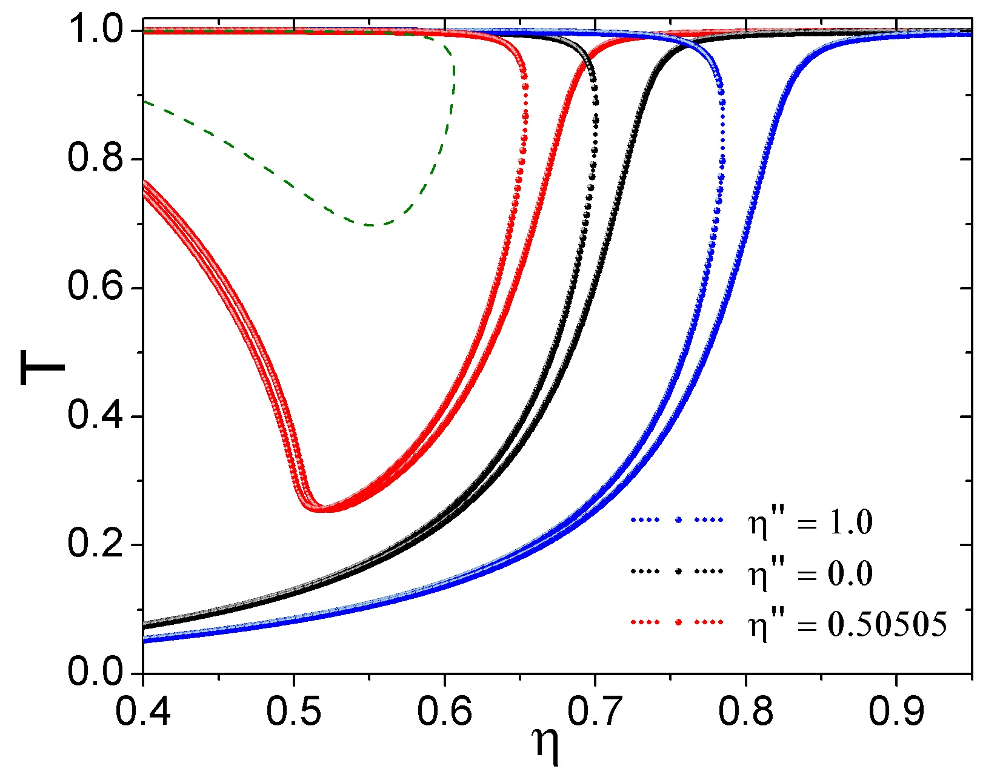 |
In recent years the cutting-edge research is increasingly interdisciplinary, and the future technological
workforce, particularly the science, engineering or medical graduates, are assumed to have
certain skills of interdisciplinary research. I am passionate about integrating undergraduate research
into my teaching. My interest is in involving students in applied physics research, which will provide
practical experience to strengthen their theoretical knowledge. My dissertation research projects
at Western Michigan University are mostly interdisciplinary research involving physics, mathematics,
and engineering related computation/theory of electromagnetism. I am confident that I have a strong
multidisciplinary background and technical know-how in computational/theoretical physics which will
facilitate me in my efforts for involving students to the applied research.
Additionally, the simulation work in my Master's degree thesis at Central Michigan University
was on Quantum Confinement of Nanostructured Systems. This topic in my thesis research yields
the potential to not only explore the electronic structures of nanostructured materials but also mimics
prototypical quantum mechanics problems. The solutions of these problems can provide a good
pedagogical way to introduce or examine novel concepts in quantum mechanics and solid-state physics.
In fact, the research techniques that I used in my Ph.D. dissertation and M.S. thesis can be quickly
implemented to the basic physics problems for understanding the explanation of why the fundamentals
of physics are important and interesting.
Bibliography:
[1] J. D. Joannopoulos, S. G. Johnson, J. N. Winn, and R. D. Meade, Photonic Crystals, Second ed.
(Princeton University Press, Princeton, New Jersey, USA, 2008).
[2] B.-S. Song, S. Noda, and T. Asano, Photonic Devices Based on In-Plane Hetero Photonic Crystals,
Science 300, 1537 (2003).
[3] S. Noda, A. Chutinan, and M. Imada, Trapping and emission of photons by a single defect in a
photonic bandgap structure, Nature 407, 608 (2000).
[4] A. R. McGurn, Photonic crystal circuits: A theory for two- and three-dimensional networks, Phys.
Rev. B 61, 13235 (2000).
[5] A. R. McGurn, Nonlinear Optical Media in Photonic Crystal Waveguides: Intrinsic Localized Modes
and Device Applications, Complexity 12, 18 (2007).
[6] A. R. McGurn and G. Birkok, Transmission anomalies in Kerr media photonic crystal circuits:
Intrinsic localized modes, Phys. Rev. B 69, 235105 (2004).
[7] K. Sakoda, Optical Properties of Photonic Crystals (Sprigner, Berlin, 2001).
[8] J. M. Lourtioz et al., Photonic Crystals (Springer, Berlin, 2005).
[9] S. F. Mingaleev, A. E. Miroshnichenko, Y. S. Kivshar, and K. Busch, All-optical switching, bista-
bility, and slow-light transmission in photonic crystal waveguide-resonator structures, Phys. Rev. E
74, 046603 (2006).
[10] M. F. Yanik, S. Fan, and M. Soljacic, High-contrast all-optical bistable switching in photonic crystal
microcavities, Appl. Phys. Lett. 83, 2739 (2003).
[11] A. Taflove and S. C. Hagness, Computational Electrodynamics, Third ed. (Artech House, Inc.,
Norwood, MA, 2005).
[12] A. J. Ward and J. B. Pendry, A program for calculating photonic band structures, Green's functions
and transmission/reflection coefficients using a non-orthogonal FDTD method, Computer Physics
Communications 128, 590 (2000).
[13] K. M. Ho, C. T. Chan, and C. M. Soukoulis, Existence of a photonic gap in periodic dielectric
structures, Phys. Rev. Lett. 65, 3152 (1990).
[14] S. L. McCall, P. M. Platzman, R. Dalichaouch, D. Smith, and S. Schultz, Microwave Propagation
in Two-Dimensional Dielectric Lattices, Physical Review Letters 67, 2017 (1991).
[15] A. A. Maradudin and A. R. McGurn, Photonic band structure of a truncated, two-dimensional,
periodic dielectric medium, J. Opt. Soc. Am. B 10, 307 (1993).
[16] A. R. McGurn, Intrinsic localized modes in nonlinear photonic crystal waveguides, Phys. Lett. A
251, 322 (1999).
[17] A. R. McGurn, Intrinsic localized modes in nonlinear photonic crystal waveguides: Dispersive
modes, Phys. Lett. A 260, 314 (1999).
My Ph.D. dissertation projects (2006 - 2012) at the Western Michigan University included:
Modeling micro or nanoscale 2D photonic crystal waveguides mediated by Kerr nonlinear impurities
Modeling the interaction of two different frequency guided modes in a Kerr media 2D photonic crystal waveguide
Impurity modes (particularly nonlinear modes) in a 2D photonic crystal
Optical properties of layered media, Bragg reflectors, and single Kerr-type-nonlinear slab
Nonlinear optics, Nonlinearities, Chaos, and Complexity in solid state system
Intrinsic Localized Mode (ILM) and Soliton in photonic band gap crystals
My M.S. thesis projects (2002 - 2005) at the Central Michigan University included:
Modeling nanostructured quantum systems: quantum confinement effects
Modeling electronic structures of quantum wells, particularly double quantum wells
Studies of heterojunctions, heterostructures, quantum wire, quantum dot et cetera
Self-consistent field method for simulating photomultiplier eigenmodes
Modeling of Harmonic oscillator and Mathieo potentials